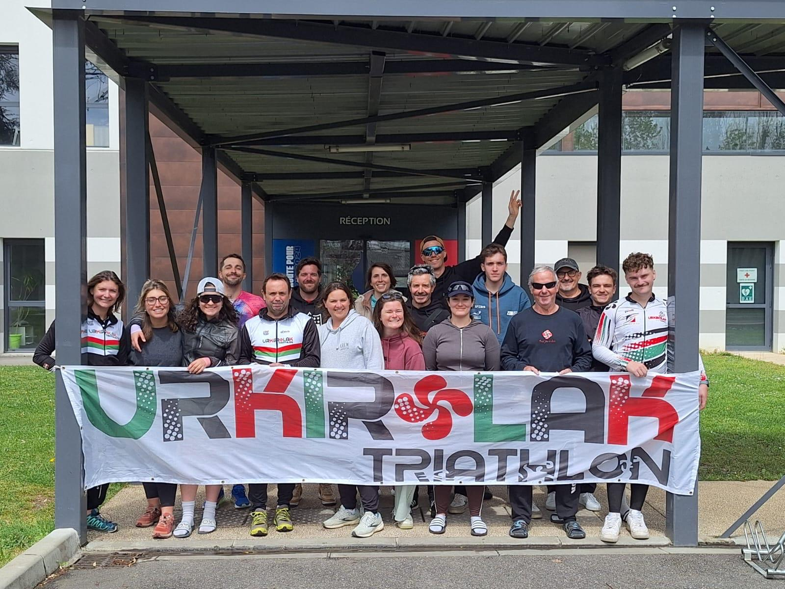

Urkirolak Triathlon
Club de Saint-Jean-de-Luz
Installé au cœur du Pays basque, notre club réunit des passionnés de natation, de vélo et de course à pied, dans une ambiance conviviale et motivante. Que vous découvriez le triathlon ou que vous cherchiez à repousser vos limites, Urkirolak vous accompagne avec des entraînements encadrés, des sorties collectives et l’esprit d’équipe qui fait notre force. Rejoignez-nous pour progresser ensemble, dans le plaisir et le partage.
Notre Club
Notre Triathlon